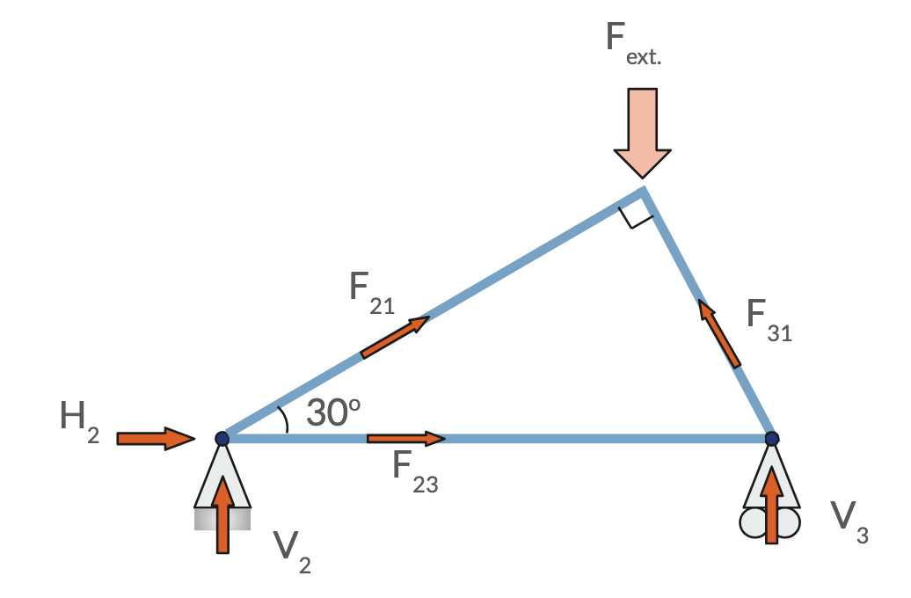

Lecture 15
E21 Computer Engineering Fundamentals
Systems of Linear Equations
Linear systems of the form \[\boldsymbol{A} \boldsymbol{x} = \boldsymbol{b}\] are extremely common in engineering.
\[ \begin{bmatrix} A_{11} & A_{12} & A_{13} \\ A_{21} & A_{22} & A_{23} \\ A_{31} & A_{32} & A_{33} \\ A_{41} & A_{42} & A_{43} \\ A_{51} & A_{52} & A_{53} \end{bmatrix} \begin{bmatrix} x_1 \\ x_2 \\ x_3 \end{bmatrix} = \begin{bmatrix} b_1 \\ b_2 \\ b_3 \\ b_4 \\ b_5 \end{bmatrix} \]
\[ \begin{aligned} A_{11}x_1 + A_{12}x_2 + A_{13}x_3 &= b_1 \\ A_{21}x_1 + A_{22}x_2 + A_{23}x_3 &= b_2 \\ A_{31}x_1 + A_{32}x_2 + A_{33}x_3 &= b_3 \\ A_{41}x_1 + A_{42}x_2 + A_{43}x_3 &= b_4 \\ A_{51}x_1 + A_{52}x_2 + A_{53}x_3 &= b_5 \end{aligned} \]
Motivating Example from E6
Find the reaction forces \(H_2\), \(V_2\) and \(V_3\) and all internal forces
\(\sum F_x = 0\) at 1,2,3
\(\sum F_y = 0\) at 1,2,3
Horizontal force balance for joint 2:
\[ \begin{array}{r c r c r c r c r c r c l} 1 H_2 & + & 0 V_2 & + & 0 V_3 & + & (\cos 30^\circ) F_{21} & + & 1 F_{23} & + & 0 F_{31} & = & \begin{Bmatrix} \text{external horiz.} \\ \text{force at 2} \end{Bmatrix} \end{array} \]
Vertical force balance for joint 1:
\[ \begin{array}{r c r c r c r c r c r c l} 0 H_2 & + & 0 V_2 & + & 0 V_3 & + & (\sin 30^\circ) F_{21} & + & 0 F_{23} & + & (\sin 60^\circ) F_{31} & = & \begin{Bmatrix} \text{external vert.} \\ \text{force at 1} \end{Bmatrix} \end{array} \]
Force balance for other joints:
\[ \begin{array}{r c r c r c r c r c r c l} \square H_2 & + & \square V_2 & + & \square V_3 & + & \square F_{21} & + & \square F_{23} & + & \square F_{31} & = & \dots \text{External Force} \end{array} \]

Assembling a matrix-vector equation
- The matrix \(\boldsymbol{A}\) multiplies a vector of unknown quantities \(\boldsymbol{x}\) and equals a right-hand-side vector \(\boldsymbol{b}\)
\[ \begin{bmatrix} 1 & 0 & 0 & \cos 30^\circ & 1 & 0 \\ \vdots & \vdots & \vdots & \vdots & \vdots & \vdots \\ \vdots & \vdots & \vdots & \vdots & \vdots & \vdots \\ 0 & 0 & 0 & \sin 30^\circ & 0 & \sin 60^\circ \\ \vdots & \vdots & \vdots & \vdots & \vdots & \vdots \\ \vdots & \vdots & \vdots & \vdots & \vdots & \vdots \\ \end{bmatrix} \begin{bmatrix} H_2 \\ V_2 \\ V_3 \\ F_{21} \\ F_{23} \\ F_{31} \end{bmatrix} = \begin{bmatrix} 0 \\ \dots \\ \dots \\ F_{1,\text{ext}} \\ \dots \\ \dots \end{bmatrix} \]
- Six equations for six unknowns (if the problem is well-posed)
Motivating Example from E11
Find the currents in this circuit.
- Sum of currents at node A \[0 + 1I_1 + 1I_2 - 1I_3 = 0\]
- Loop 2: \[+5 - 4I_1 + 0I_2 - 3I_3 = 0\]
- Loop 3: \[+6 + 0I_1 - 5I_2 - 3I_3 = 0\]
Solving sysems of the form \(A x = b\)
- Equivalent to inverting the system matrix \(A\) because \(Ax = b \implies x = A^{-1}b\)
- The same \(A^{-1}\) can be used with multiple right-hand side vectors.
- \(Ax = b\) and \(Ax = c\) have solutions: \(x = A^{-1}b\) and \(x = A^{-1}c\) respectively.
- Requires number of equations to equal number of unknowns.
- If unknowns > equations: probably need additional physical constraints
- If equations > unknowns: problem is overdetermined
- Cannot double-count two equations that express the same information in different ways.
- The above is equivalent to saying the equations need to be linearly independent.
Gaussian Elimination followed by substitution
\[\phantom{+}2x_1 + 3x_2 = 4 \tag{1}\] \[-\phantom{2}x_1 + 2x_2 = 5 \tag{2}\]
- Idea: replace (2) with an equation that only has \(x_2\), not \(x_1\)
- Procedure: Find a linear combination of eqs. (1) and (2) that has \(0x_1\).
e.g.
\((1) + 2 \times (2) \rightarrow \text{ new } (2)\)
The new equation is \(\boxed{0 x_1 + 7 x_2 = 14}\) \((2^*)\)
Resulting equations after Gaussian elimination
Original equations: \[\phantom{+}2x_1 + 3x_2 = 4\] \[-\phantom{2}x_1 + 2x_2 = 5\]
Equivalent equations: \[\phantom{+}2x_1 + 3x_2 = 4 \tag{3}\] \[\phantom{-}0x_1 + 7x_2 = 14 \tag{4}\]
- and (4) are easy to solve for \(x_1\) and \(x_2\).
- First solve for \(x_2\) using Equation 4
- Then substitute value of \(x_2\) into Equation 3. Now, Equation 3 has only one unknown
- Solve Equation 3 for \(x_1\).
Gaussian elimination followed by substitution \(\rightarrow\) solution!
Process of Gaussian Elimination
Start with \(\boldsymbol{A} \boldsymbol{x} = \boldsymbol{b}\)
\[ \begin{bmatrix} A_{11} & A_{12} & A_{13} \\ A_{21} & A_{22} & A_{23} \\ A_{31} & A_{32} & A_{33} \end{bmatrix} \begin{bmatrix} x_1 \\ x_2 \\ x_3 \end{bmatrix} = \begin{bmatrix} b_1 \\ b_2 \\ b_3 \end{bmatrix} \]
Construct a so-called augmented matrix with one extra column, the r.h.s. of the equation.
\[ \left[\begin{array}{ccc|c} A_{11} & A_{12} & A_{13} & b_1 \\ A_{21} & A_{22} & A_{23} & b_2 \\ A_{31} & A_{32} & A_{33} & b_3 \end{array}\right] \quad \]
Perform row operations until an augmented matrix of the following form survives.
- This is known as the row echelon form.
\[ \left[\begin{array}{ccc|c} A^*_{11} & A^*_{12} & A^*_{13} & b^*_1 \\ 0 & A^*_{22} & A^*_{23} & b^*_2 \\ 0 & 0 & A^*_{33} & b^*_3 \end{array}\right] \quad \]
Recognize that the above is shorthand for the following equation:
\[ \begin{aligned} A_{11}^* x_1 + A_{12}^* x_2 + A_{13}^* x_3 &= b^*_1 \\ \phantom{A_{21}x_1 +} A^*_{22}x_2 + A^*_{23}x_3 &= b^*_2 \\ \phantom{A_{31}x_1 + A_{32}x_2 +} A_{33}^* x_3 &= b^*_3 \\ \end{aligned} \]
Solve, starting from the last.
\[ \begin{aligned} A_{11}^* x_1 + A_{12}^* x_2 + A_{13}^* x_3 &= b^*_1 \\ \phantom{A_{21}x_1 +} A^*_{22}x_2 + A^*_{23}x_3 &= b^*_2 \\ \phantom{A_{31}x_1 + A_{32}x_2 +} A_{33}^* x_3 &= b^*_3 \\ \end{aligned} \]
\[x_3 = \frac{b_3^*}{A_{33}}^*\] \[x_2 = \frac{b_2^* - A_{23}^* x_3}{A_{22}^*}\] \[x_1 = \frac{b_1^* - A_{13}^* x_3 - A_{12}^* x_2}{A_{11}^*}\]
What are row operations ?
- Swap row \(m\) with row \(n\)
- Multiply a row by a non-zero constant
- Add one row to another